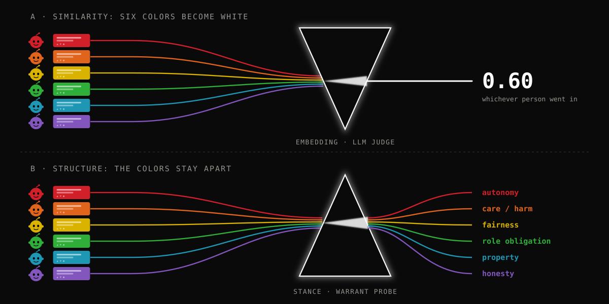

Anyone

1Massachusetts Institute of Technology
Finding Free-text user simulators (HumanLM, Turing-RL) are trained and scored by an LLM judge comparing the generated reply to the person’s real one. Feed the model someone else’s history and the score does not move. Ask instead which principle the person would cite, and accuracy drops from 50% to 25%, no better than guessing among four options.
Intuition Embedding similarity and LLM-as-judge lack discriminant validity across persons: as a reward, the signal is too coarse to carry who is being simulated. A simulator’s output should be extracted into structure before it is compared, not compared as free text by an embedding or a language model.
The judge score is both the RL reward and the evaluation in HumanLM (Wu et al. 2026) and Turing-RL (Wang et al. 2026). The control: swap the target’s history for another commenter’s on the same post and score again. If the metric measures the person, the score drops. Neither paper runs it; none of 30 surveyed papers on free-text simulation does.
The post. A first-year teacher and mother of three skips a once-a-year gathering with her mother-in-law’s cousins to rest and study for certification. The mother-in-law is upset. AITA?
“NTA. You need down time. It’s sad you couldn’t go, but your mental health and physical health matter more. If she can’t understand, that’s on her. I hope you’re able to find a balance, though, because you need to be able to rest more and not be so run down.”
Stance: NTA · Warrant: care / harm (her health comes first)
“NTA. You’re a new teacher, a mom of three, and a wife. You’re already doing the work of like five people. Your MIL needs to understand that you hitting a wall isn’t personal, it’s survival. You can’t pour from an empty cup, and right now yours is bone dry. Your husband gets it. That’s what matters. […] If your MIL can’t respect a boundary as reasonable as this one, that’s on her, not you.”
“NTA. You are a new teacher, a mom of three, and a wife. You are literally running on empty and your MIL is upset that you didn’t attend a party with her second cousins? Your husband gets it. That’s what matters. Your mental and physical health come first, you can’t pour from an empty cup. […] Your MIL doesn’t have to understand introversion to respect your boundary.”
Judge’s key points from the real comment: (1) NTA; (2) health matters more than the event; (3) the MIL’s lack of understanding is her issue. Both texts cover all three, so both score high. Nothing in the rubric asks which person wrote it. The two texts are near-duplicates: the simulator barely used the history.
Q1. Verdict? A. NTA B. YTA
Q2. Which principle does this person rely on? A. role obligation B. care / harm C. property / consent D. autonomy / boundaries
Simulator with the target’s history: A, B (matches). With another commenter’s history: A, C (verdict right, reason wrong).
The swap changed the answer to Q2 only. The judge score did not register it; the probe did. Across the pilot, the judge gives the swapped person a slightly higher score on average, and that gap is no more reliable than the gap between two samples from the same person. The probe’s warrant accuracy halves.
| Line | Fidelity metric | Wrong-person control |
|---|---|---|
| HumanLM 2026 | LLM-judge key-point coverage, embedding cosine | None. Reliability check swaps the judge, not the person |
| Turing-RL 2026 | pairwise LLM Turing judge | None. History / persona ablation moves the score 4.31 to 4.23 |
| Digital twins (Park 2024, Twin-2K, Peng 2025) | item accuracy vs test-retest | Nested ablations only. Peng: twins closer to the empty-persona twin than to their own human |
| Population sims (OpinionQA, Argyle, Anthology, Hewitt) | distance to group marginals | Anthology’s random backstory is the nearest analogue |
| Kim & Lee 2023 | AUC with learned respondent embeddings | Yes. Shuffling respondents drops AUC 0.857 to 0.720. The only one |
Full table: notes/eval-survey.md. No paper scores a generated reason against the one the person actually gave.
Person effect = same − cross; noise floor = same − same2; user-clustered bootstrap. Each text is scored by HumanLM’s judge, embedding cosine, and the SUITE probe (stance NTA / YTA; warrant, one of ten moral principles), against labels from the real comment.
SUITE Table 2. Claude Sonnet 4.6 answering the probe directly, 3 runs.
| Probe | same | cross | drop | std | SNR |
|---|---|---|---|---|---|
| warrant (4-way) | 50.13 | 25.06 | 25.1 | ±0.5 | ≈ 50 |
| stance (NTA / YTA) | 85.82 | 83.04 | 2.8 | ±0.5 | ≈ 6 |
Pilot. 60 items, 53 users, generator claude-4.5-haiku. Scores in [0, 1]. The judge is HumanLM’s own: their evaluation prompt and model (claude-4.5-haiku, temperature 0, one text per call), taken from their repo.
| Metric | same | cross | same2 | person effect [95% CI] | noise floor [95% CI] |
|---|---|---|---|---|---|
| HumanLM judge | 0.516 | 0.546 | 0.528 | −0.030 [−0.106, +0.051] | −0.012 [−0.058, +0.038] |
| embedding cosine | 0.644 | 0.639 | 0.643 | +0.005 [−0.011, +0.021] | +0.001 [−0.012, +0.012] |
How often the metric ranks the right person above the other one: judge 0.39 [0.29, 0.49], embedding 0.48. A coin flip gives 0.50; the judge is below it.
Given only the real comment, a reader model recovers the labels at 98.3% (stance) and 65.0% (warrant; human annotators 73%). The probe applies to any simulator’s free text.
| Layer | entropy across commenters (bits) | posts where all commenters agree |
|---|---|---|
| stance | 0.26 | 65.3% |
| warrant | 1.15 | 13.3% |
Posts with three or more commenters. Similarity covers the verdict, the facts and the genre, which everyone shares. What differs between people is one clause.

The same six texts through two rulers. The judge returns one number for all of them; the probe returns the reason each person gave.
The simulator gets the context and the stance / warrant questions built from the real comment. This is SUITE; gives Table A.
The simulator generates freely; a reader answers the same questions from the text alone. Works on HumanLM and Turing-RL outputs unchanged.
A fidelity signal should move when the person changes and hold when only the sample changes. The warrant probe meets this at a signal-to-noise ratio near 50. The similarity scores do not, and they are the training reward in both papers.
@misc{li2026anyone,
title = {Anyone Scores the Same: User-Simulator Metrics
Never Checked Whose Response They Reward},
author = {Li, Chance Jiajie},
year = {2026},
note = {Work in progress}
}